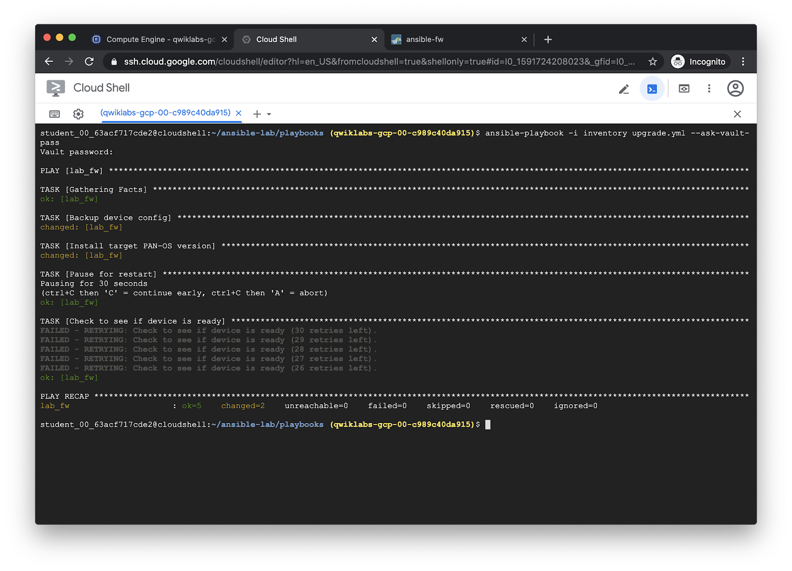
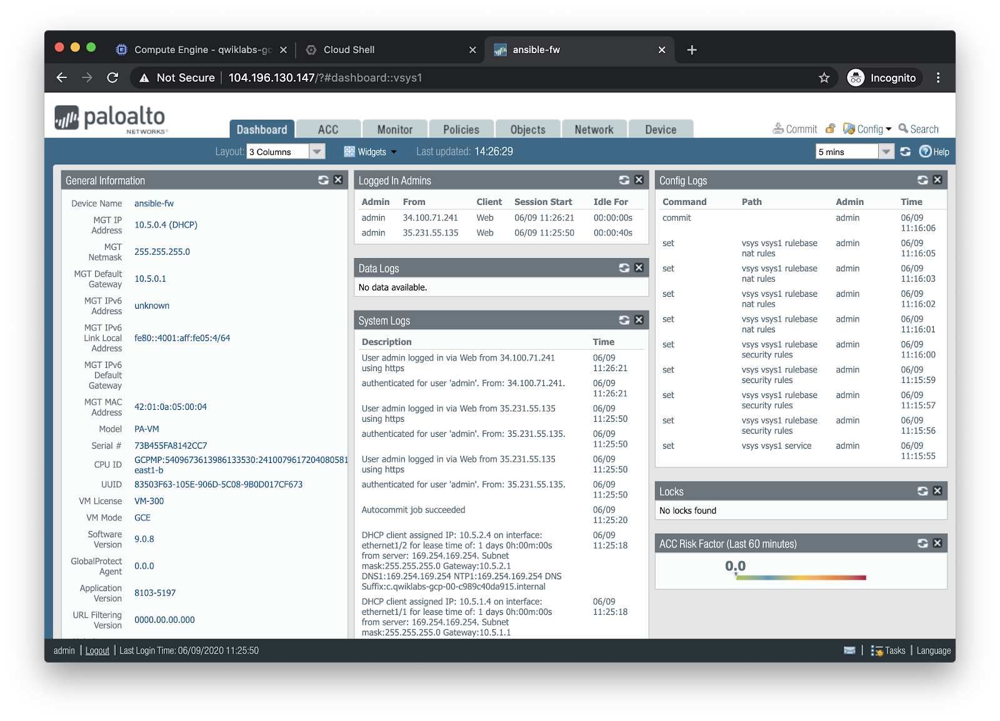

Run the Upgrade playbook¶
The upgrade.yml playbook automates a number of actions related to upgrading
the software on a PAN-OS device. It will:
Back up the configuration of a PAN-OS device locally.
Download and install a new version of PAN-OS, then reboot the system.
Polls to see when the firewall is ready again (this is actually the same as the
check_ready.ymlplaybook).
For more information, see the documentation on the modules used:
---
# upgrade_single.yml - PAN-OS single firewall upgrade playbook.
#
# Description
# ===========
#
# Upgrades a single PAN-OS device to the specified version. Upgrade must be a single step (i.e. 8.1.7 to 8.1.12).
# For major version upgrades requiring a base image to be downloaded to the device prior to performing the upgrade,
# see the 'download_panos_image.yml' playbook.
#
# This playbook requires connection details for the deivce to be specified in the variables 'ip_address', 'username',
# and 'password'. These may be defined as host variables (see `host_vars/firewall.yml` for an example) or
# extra vars.
#
# Modules Used
# ============
#
# panos_op - https://ansible-pan.readthedocs.io/en/latest/modules/panos_op_module.html
#
# Usage
# =====
#
# Required variables:
#
# target: Target PAN-OS device, as named in the inventory. See `host_vars/lab_fw.yml` for sample
# definition of host variables.
#
# version: Version to install.
#
# See the VARS section of the playbook for additional customization options.
#
# Default run (maintenance release upgrade):
#
# $ ansible-playbook -i inventory upgrade_single.yml --extra-vars "version=9.0.3-h3"
- hosts: '{{ target | default("lab_fw") }}'
connection: local
vars:
device:
ip_address: '{{ ip_address }}'
username: '{{ username | default(omit) }}'
password: '{{ password | default(omit) }}'
api_key: '{{ api_key | default(omit) }}'
# backup_config - Create a backup of the currently running config.
backup_config: true
# backup_filename - Filename for running config backup.
backup_filename: 'ansible-backup-{{ ansible_date_time.date }}.xml'
# version - Version of PAN-OS to install.
version: '9.0.8'
vars_files:
- creds.yml
tasks:
- name: Backup device config
paloaltonetworks.panos.panos_op:
provider: '{{ device }}'
cmd: 'save config to {{ backup_filename }}'
when: backup_config|bool
- name: Install target PAN-OS version
paloaltonetworks.panos.panos_software:
provider: '{{ device }}'
version: '{{ version }}'
restart: true
- name: Pause for restart
pause:
seconds: 30
- name: Check to see if device is ready
paloaltonetworks.panos.panos_op:
provider: '{{ device }}'
cmd: 'show chassis-ready'
changed_when: false
register: result
until: result is not failed and (result.stdout | from_json).response.result == 'yes'
retries: 30
delay: 60
Run the playbook with ansible-playbook:
ansible-playbook -i inventory upgrade.yml --ask-vault-pass
Output:

After the playbook has completed, the web UI of the firewall will show it has been upgraded to the specified version.
